Este manual mostra passo a passo como usar o sistema desenvolvido pela CodeGus para gerenciar pedidos, senhas e cardápio da Sisi Pizzeria. Não é preciso conhecimento técnico — basta seguir os capítulos na ordem.
O sistema tem quatro telas. Cada uma tem um propósito claro. Você acessa todas pelo navegador (Chrome, Safari ou Edge), digitando o endereço do computador da pizzaria.
Esta é a tela mais usada no dia-a-dia. Fica aberta no computador do caixa. À esquerda está o cardápio, à direita o carrinho do pedido atual, e embaixo as senhas ativas.
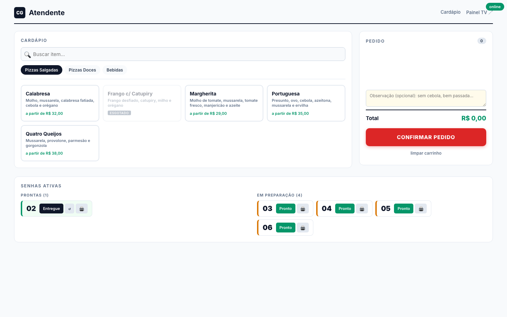
Quando o cliente quer dois sabores em uma pizza só, use a opção "Meia a meia" dentro do modal do item.
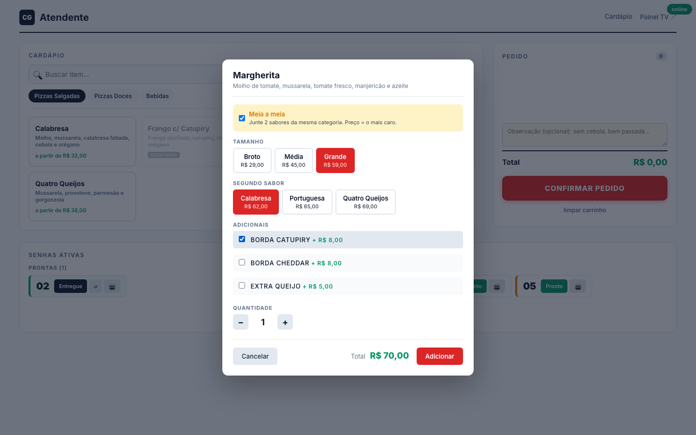
Se errou algo, clique na linha do item no carrinho — o modal reabre com tudo preenchido, você ajusta e clica em Atualizar. Pra remover, clique no × vermelho.
Embaixo da tela ficam as senhas Prontas (verdes) e Em preparação (amarelas). Cada card tem botões:
Esta é a tela que fica em tela cheia na TV do salão pro cliente acompanhar. Duas colunas grandes: Em Preparação à esquerda e Pronto à direita, com destaque ampliado pra última senha pronta.
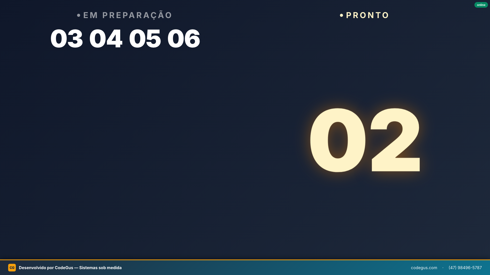
https://sisi.codegus.com/painel na barra do navegador.A cada intervalo (padrão: 5 minutos) o painel troca por alguns segundos por um slide de propaganda CodeGus, depois volta pras senhas automaticamente. Esta é a contrapartida do sistema ser gratuito.
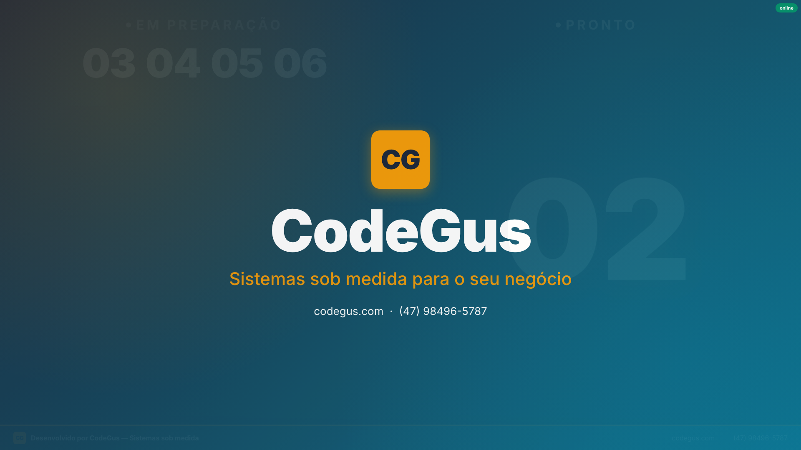
A tela de Cardápio é usada pelo dono/gerente pra criar categorias, itens, tamanhos, preços e adicionais. O cardápio alimenta a tela do Atendente.
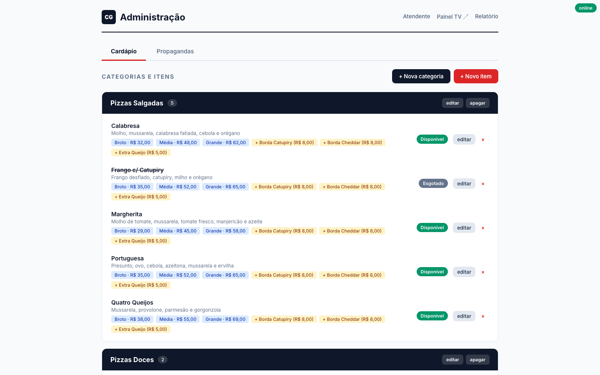
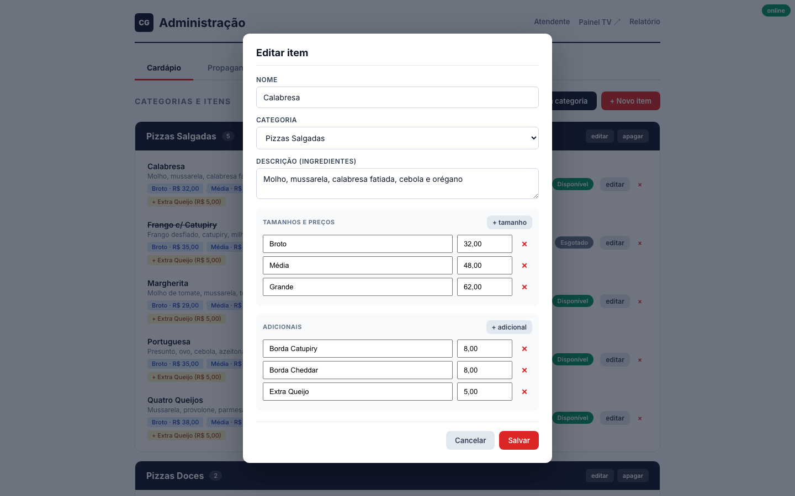
Na tela de Cardápio há uma aba chamada Propagandas. Aqui você gerencia os slides que aparecem periodicamente no painel da TV.
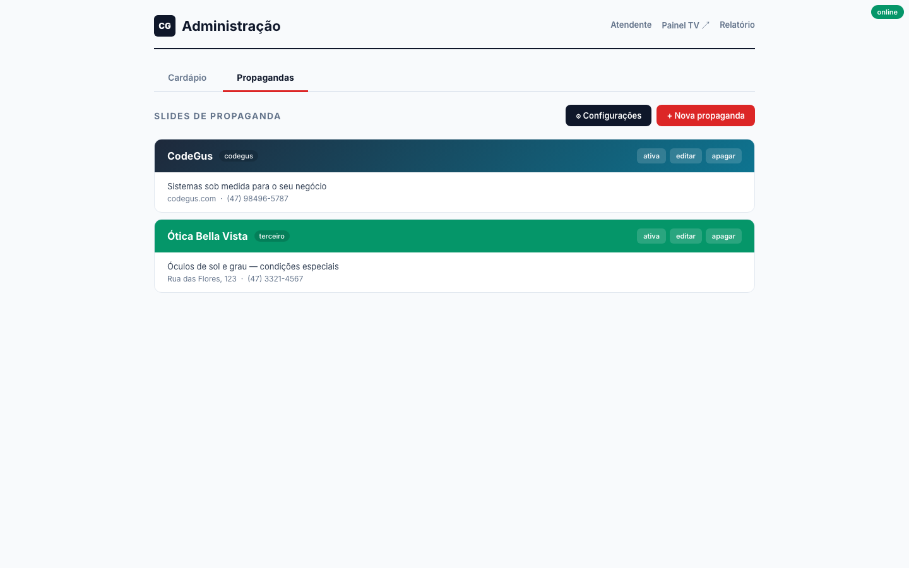
Clique em Configurações pra ajustar:
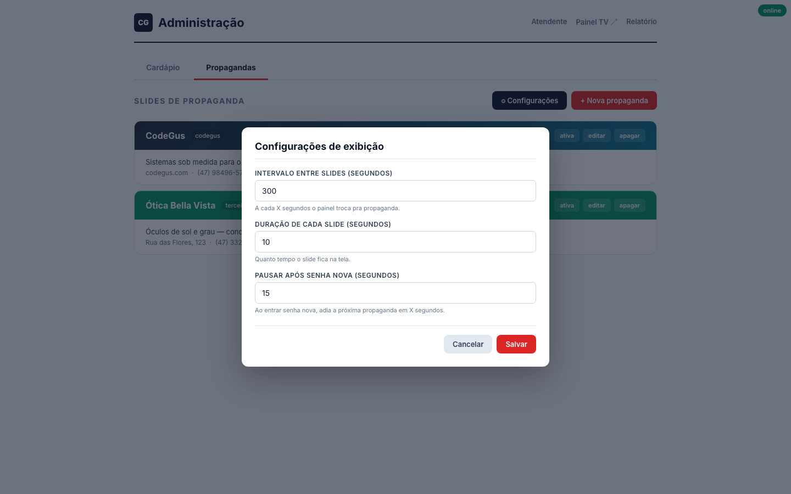
A tela de Relatório mostra o fechamento: faturamento, ticket médio, itens mais vendidos e o histórico completo das senhas do dia.
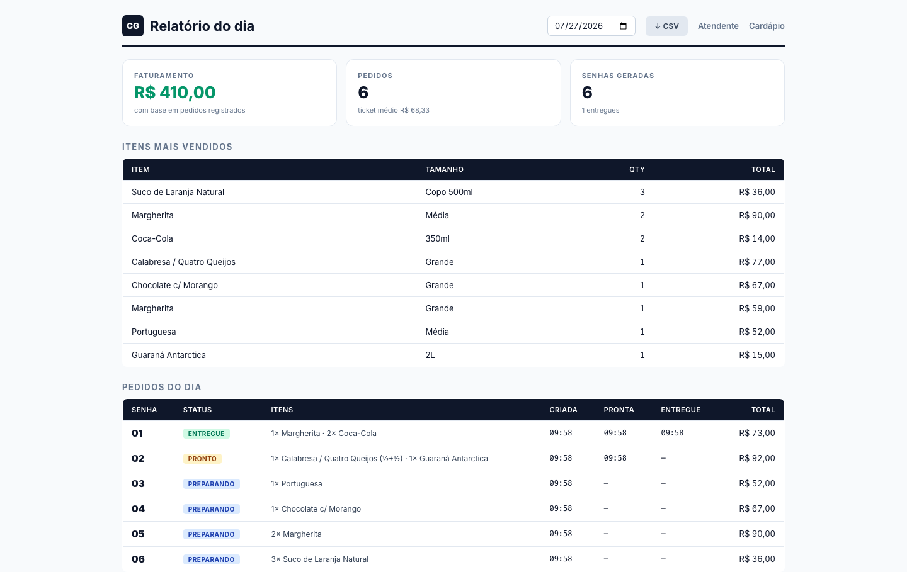
Ao confirmar o pedido, o sistema abre uma janela e imprime automaticamente duas vias: uma para o cliente (com preços) e outra para a cozinha (com a senha em destaque e sem preços).
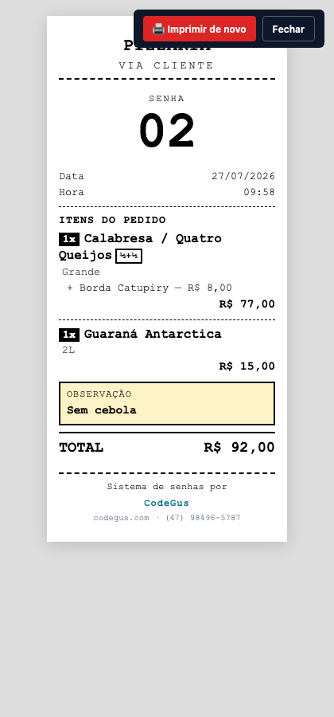
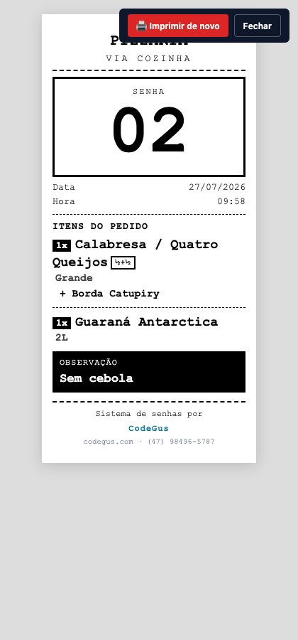
Qualquer dúvida ou ajuste no sistema, é só nos chamar.
O sistema é acessado pelo navegador em https://sisi.codegus.com. Duas senhas controlam o acesso: a senha de atendente (pra lançar pedidos) e a senha de admin (pra editar cardápio, ver relatório e fazer backup). O Painel da TV continua aberto (sem senha) porque o cliente precisa ver.
https://sisi.codegus.com/painel
pode ser aberto direto na TV sem digitar senha. Ele só mostra as senhas, cliente não faz nada.
Você não precisa fazer nada. Como o sistema é online, sempre que a CodeGus publica uma melhoria ou correção, ela fica disponível na mesma hora — basta recarregar a página (F5). Não existe "botão de atualizar", nem download, nem reinstalação.
Todo o cardápio, propagandas, configurações e histórico de pedidos fica salvo dentro do sistema.
Se você reinstalar o sistema ou trocar de computador, esses dados podem se perder.
Por isso o backup existe: exporta um arquivo .json pequeno que guarda tudo.
Como exportar:
sisi-backup-AAAA-MM-DD.json.Como importar (restaurar):
.json salvo antes.Este botão apaga todas as senhas ativas (em preparação e prontas) e faz a próxima senha começar de novo em 01. É útil quando você quer separar turnos — por exemplo, fechar o almoço e começar o jantar com o contador zerado.